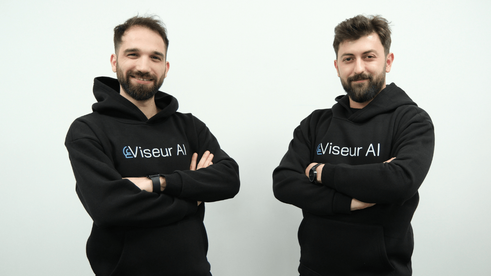
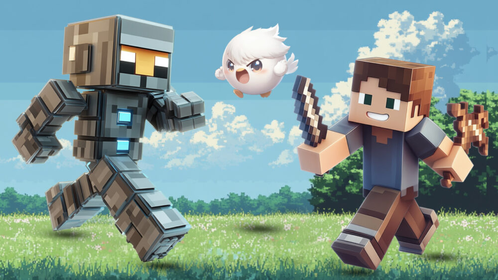
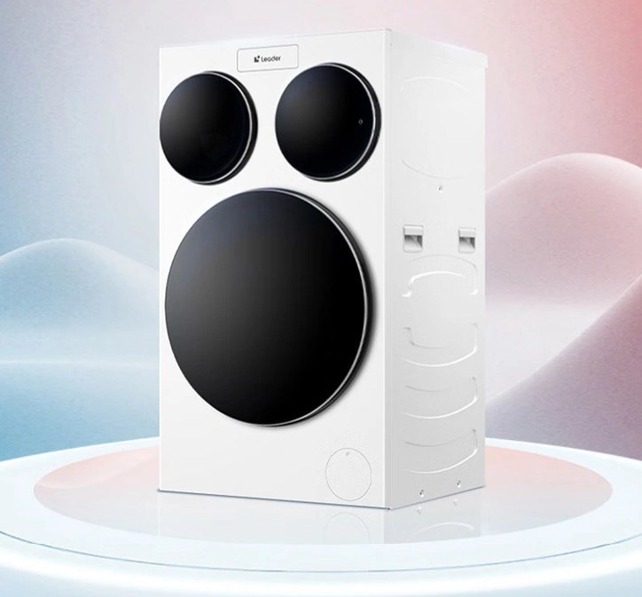

Teknoloji alanında güncel haberler ve gelişmeler
18.03.2025
Dijital dönüşümle birlikte, bulut BPM çözümleri benimseniyor ve bu da beraberinde
güvenlik ve uyumlulukzorluklarını getiriyor. 2025’te işletmeler için en kritik öncelik,
iş süreçlerini optimize ederken veri gizliliğini merkeze almak olacak.

18.03.2025
Yerli sağlık girişimi Viseur AI, Decacorn Angels’tan yatırım aldı. Şirkete yapılan yatırımın finansal değerleri açıklanmadı. Ankara merkezli Viseur AI'ın bugüne kadar aldığı yatırım 250 bin euroya ulaştı. Şirketin değerlemesi ise 6,6 milyon euro oldu. Şirket, yeni yatırımı Viseur AI'ın Ar-Ge faaliyetlerini hızlandırmak ve küresel pazarlarda büyüme stratejilerini desteklemek için kullanacağını açıkladı.
2024 yılında Serkan Sökmen ve Tarıkcan Doğanay tarafından kurulan Viseur AI, sağlık teknolojileri alanında faaliyet gösteren ve yapay zeka tabanlı çözümler geliştiren bir şirket olarak ön plana çıkıyor.
18.03.2025
Araştırmalar bu alandaki talebin daha da artacağını gösteriyor. Yapay zeka sektöründe 2025 yılında 2 milyar dolardan fazla gelir bekleniyor.
Yapay zeka teknolojisi başlangıçta teknoloji şirketlerinin öncülüğünde gelişen bir alan olsa da, artık çok daha geniş bir etki alanına sahip.
iYapay zeka destekli uygulamalar, e-ticaretten finans sektörüne, sağlık hizmetlerinden eğitim teknolojilerine kadar birçok sektörde temel bir araç haline geldi.
18.03.2025
ASUS günlük yaşam için tasarladığı Vivobook S14 (S3407QA) ve Vivobook S16 (S3607QA) Copilot+ dizüstü bilgisayarlarını tanıttı.
Yeni nesil Snapdragon® X işlemcisi ve 45 TOPS değerine kadar NPU desteği ile donatılan ultra ince ve hafif dizüstü bilgisayarlar, gelişmiş yapay zekâ özellikleri, uzun pil ömrü ve yüksek seviyede bağlantı imkânları sunuyor.

18.03.2025
“Yapay zeka destekli oyunların yeni standart haline geldiği günümüzde, dijital oyun deneyiminde insan unsurunu korumak her zamankinden daha önemli.
Bugün, oyuncular için dünyanın lider yaşam tarzı markası olan Razer ve insan merkezli açık protokoller geliştiren World, yapay zeka devriminin merkezine gerçek oyuncuları yerleştiren yenilikçi bir iş birliği duyurdu.

18.03.2025
Beyaz eşya sektörünün önde gelen markalarından Haier, çamaşır yıkama deneyimini bir üst seviyeye taşıyacak yeni ürünü tanıttı. Leader Three-Tub Washing Machine isimli model dünyada bir ilke imza atarak üç tamburlu tasarımla karşımıza çıkıyor. Bu sayede farklı türde ve boyuttaki çamaşırların aynı anda yıkanması mümkün olacak.
Makindeki ana tamburun kapasitesi 10.5 kg. Diğer iki ek tamburun her biri ise 1 kg kapasite sunuyor. Haier, bu makine için özel bir 12 yollu su sirkülasyon sistemi geliştirdi. Bu sistem, her tamburda kullanılan su ve deterjanın diğerlerine karışmasını önlüyor. Böylece çamaşırlar için en uygun yıkama koşullarının sağlanması hedeflenmiş. - Kaynak: donanimhaber.com